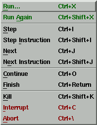

![[LinuxFocus Image]](../../common/January1998/border-short.jpg)
| Noticias Archivos Compañías Consejos |
Depurando Código con dddpor Jose María Laveda |
Prólogo
¿Qué es un depurador ?
¿Qué es DDD?
Aspecto del Entorno
Empezando por Abajo
Consideraciones Finales
|
" Me gustan mis errores, no quisiera renunciar
a la deliciosa libertad de equivocarme". PrólogoEl siguiente artículo está concebido con el propósito de mostrar una serie de conceptos básicos a todo aquel que nunca a utilizado un depurador o que, habiéndolo utilizado, esta buscando un entorno gráfico más agradable para su trabajo diario con esta herramienta. Sobre la potencia y posibilidades del depurador descrito (el gdb) se podría escribir mucho por lo que la simplicidad con que se han tratado los términos es con un fin meramente didáctico, como siempre :). ¿Qué es un depurador ?(Basado en una historia real ;) )."Erase una vez un programador cuya única tarea, cuando se hallaba con un error en su software, era la siguiente: /*Código*/(...) bucle cambio_en_una_variable mostrar valor_variable; fin_bucle (...) Tenía que insertar numerosas líneas en su código fuente para que, durante la ejecución de su programa, se le fuesen mostrando los valores de las variables de interés. Ésto hacía su vida difícil y el coste de depurar (=revisar) su código fuera dos veces mayor que el de escribir el código ... (..)". ¿Quien no se ha encontrado alguna vez ante este panorama?, tenemos un error en un programa, lo hemos intentado y modificado todo, estamos convencidos de que "es culpa del compilador" ya que no se puede hacer más, se han intentado alternativas.... aquí es donde entra en juego este tipo de software. Un depurador permite controlar la ejecución de un programa en todo momento, de esta forma podemos conocer el estado de las variables, definición de las mismas, que pasaría ante ciertos cambios, etc... Todo ello, repito, de forma interactiva y mientras se ejecuta el código a depurar. Si con esta definición no ha quedado muy claro espero hacerlo a lo largo de este artículo. ¿Qué pasaría si el programador de nuestra historia dispusiera de un programa que le permitiese hacer lo siguiente?. curro # espiar mi_programa(Suponiendo que el programa a depurar se llame mi_programa) Una vez invocado el programa "espia", hiciera lo siguiente: espia > ejecuta mi_programa "hasta la línea 50"espia > muestrame el valor de la variable <X> espia > ¿de que tipo es la variable <X> En este punto nuestro amigo da un salto de alegría, ha encontrado su error, metiendo números de centenares de cifras de bytes puede ser malo para su salud. espia > sigue ejecutándote hasta el finalespia > salir. Hemos visto que el programa llamado
"espia" para nuestra historia le ha
ayudado, y mucho, ha estado ejecutando el programa a
su antojo, observando valores de variables y
cómo están definidas. Pues bien, ESO
ES UN DEPURADOR, a grandes rasgos, claro. Aviso !!: Para poder hacer uso de esta capacidad el programa ha de ser compilado con el parámetro "-g", caso de tratase de un programa en C y el compilador GNU gcc. Existe una herramienta de este tipo disponible para todos los usuarios de LINUX (y otras muchas plataformas), el GDB " The GNU Source-Level Debugger". Por el mismo precio, y bajo la misma licencia, que el sistema operativo con el que seguramente estás leyendo este artículo, la GNU General Public License. Permite depurar código generado en C, C++, Modula-2 y ensamblador. Seguramente la distribución que utilizas lo incorpora, si no es así, cambia de distribución inmediatamente u obtenlo de cualquier lugar en la red donde esté disponible ;). Echa un vistazo a los paquetes que tienes disponibles, si obtienes un "command not found" al invocarlo como "gdb" es que muy probablemente no lo has instalado. Introducido en el directorio "/usr/src/gdb-4.xxxx/gdb", teclea "./configure", tras lo cual puedes introducirte en el directorio "doc" y teclear "make gdb.dvi;make refcard.dvi" con lo que obtienes dicho manual en el formato especificado, de ahí a obtener un fichero que tu impresora pueda entender lo dejo como ejercicio para el lector :). ¿Qué es DDD?En vez de continuar por una descripción detallada del funcionamiento de este programa, todos sus comandos y ejemplos de funcionamiento, pienso que es mucho más útil para el no iniciado el facilitarle la tarea mediante el uso un entorno más amable. En este caso explicaré el uso general de uno de los disponibles, el llamado DDD de Display Data Debugger.
Este entorno permite, en términos generales, el disponer de un interfaz mucho más amigable además de poder configurar la tarea de depurar código a nuestro gusto, pero una advertencia previa, simplemente se trata de un entorno gráfico que funciona "por encima" del gdb, por lo que necesita de este para poder ejecutarse, no se reinventa la rueda. De echo veremos como su aspecto nos posibilitará el utilizar el gdb directamente si lo deseamos. También es posible utilizar otros depuradores (dbx y xdb). Puede obtenerse el software e información sobre el mismo en , http://www.cs.tu-bs.de/softech/ddd/ aunque si utilizas Red Hat, por ejemplo, lo tienes disponible en formato .rpm". Una advertencia, puede que tengas dos versiones del mismo, una estática y otra dinámica, esto es debido a que se basa en las librería Motif, por lo que de no tenerlas ha de optarse por la versión estática del mismo. El autor desconoce la situación actual en cuanto a si DDD funciona correctamente con LESSTIF ( http://www.lesstif.org), implementación libre de dicha librería gráfica. No hace mucho tiempo funcionaba añadiendo un parche al código fuente del depurador, el autor de este artículo lo usaba de esta forma en un kernel 1.2.13 y con una lesstif 0.75 (si no recuerdo mal). Consulta la página de este proyecto para más información. Al grano, invocando ddd obtendremos: Figura 1. Pantalla que se obtiene al invocar el programa Podemos invocar el programa de tres formas, la descrita y las dos siguientes: ddd <programa> coreddd <programa> <identificador_de_proceso> Un fichero "core" se produce ante un error en un programa, que automáticamente generará dicho fichero para poder ser inspeccionado con este tipo de herramientas. Si en tu máquina no se generan este tipo de ficheros echale un vistazo al valor del intérprete de comandos para este fichero (con 'ulimit -a' muestra todos ellos, con 'ulimit -c <valor>' puedes definir el tamaño máximo de estos ficheros, además de otros parámetros de interés). Mediante el identificador de proceso podemos inspeccionar el programa mientras se está ejecutando. Con este entorno gráfico existen múltiples formas de realizar una tarea, no voy a describirlas todas, simplemente la más sencilla o la más directa, asimismo podrás observar en la ventana del depurador (la última de abajo) el reflejo vía comandos de todo lo que estas haciendo, lo cual puede serte muy útil para aprender el manejo del gdb desde la línea de comandos. Aspecto del EntornoEn la Figura 1 puede observarse que la ventana está dividida en 3 zonas, la de más abajo se corresponde con la ventana del depurador "puro y duro", en ésta podemos introducir los comandos como si no tuviésemos el interfaz a nuestra disposición, la zona central es la que contendrá al código fuente, la superior puede servirnos para obtener el contenido de una variable en forma gráfica. La barra de tareas o ventana flotante que aparece nos permitirá el controlar la ejecución del programa en todo momento. Existen asimismo una ventana de ejecución de las aplicaciones y otra que muestra el código fuente del software a depurar. Ambas opcionales. Podemos obtener información sobre lo que estamos haciendo, o deseamos hacer en cualquier momento de múltiples formas, por ejemplo, cuando estamos encima de una variable o de cualquier botón del entorno nos aparecerá un diálogo mostrando información sobre el mismo; en la parte inferior de la ventana tenemos una línea de estado sobre lo que se está haciendo y su resultado; tenemos en la parte derecha un menú desplegable con la ayuda disponible; pulsando F1 y después sobre lo que queremos conocer obtendremos una ventana de diálogo con lo que queremos saber ... En la ventana del depurador podemos introducir "help" para una ayuda general o para cualquier comando deseado. Mediante el menú "Preferences" podemos hacer, si lo deseamos, que se nos muestren las ventanas separadas, en vez de unidas. Figura 2. Ayuda sobre el menú "File" Empezando por AbajoEn la ventana del depurador ("DDD:Debugger Console") podremos dar nuestros primeros pasos en el uso del depurador o, si nuestros conocimientos lo permiten, introducir los comandos deseados sin hacer uso del ratón ni de menú alguno. Puede ayudarnos para esto el observar su estado cuando realizamos cualquier maniobra usando el entorno gráfico. Mediante la opción del menú "Commands->Command History" podremos obtener una ventana con el histórico de todos los comandos introducidos hasta el momento. Para un mejor conocimiento de las características recomiendo recurrir al propio manual del mismo. De todas formas trataré de especificar en algunos casos cómo se realizaría una tarea desde el depurador directamente. Ideas GeneralesUna vez cargado el código fuente deseado, mediante la invocación del depurador o mediante el menú "File", aparecerá el código fuente del mismo en el área correspondiente. A partir de este momento ya podemos navegar por el código fuente, obtener el valor y definición de las variables, ejecutar el programa controlando su evolución... Podemos visualizar la salida de un programa mediante una ventana de ejecución (Options -> Run in Execution Window ), o viendo su salida en la consola del depurador (salvo si el programa está concebido para ejecutarse con Motif, u otra librería de desarrollo de entornos gráficos). Ubicando el puntero del ratón encima de cualquier variable del código fuente podemos obtener su valor actual en la linea de estado o en forma de información emergente. Si pulsamos el botón derecho del ratón obtenemos un menú como el siguiente: Este menú permite el obtener el valor de la variable "fname", en la ventana inferior, mostrarla visualmente en la ventana superior ("área de dibujo"), tanto si se trata de una variable como si es un puntero (variable que contiene la dirección de memoria de otra, no su valor). Con "What is" podemos conocer la estructura o tipo de variable señalada. Lookup permite la búsqueda de ocurrencias de la misma. Break at y Clear at permiten el manejo de los denominados "puntos de ruptura" ( breakpoints) que explicaré en breve. Podemos utilizar también las opciones disponibles desde la barra de botones ubicada debajo del área del código fuente, colocando el parámetro deseado dentro de la ventana izquierda y escogiendo posteriormente la acción deseada. Un punto de ruptura permite ejecutar el programa hasta una línea concreta del programa, para después poder observar el valor de las variables, seguir ejecutando paso a paso el mismo, revisar el estado de las hebras (threads).... Hay que tener en cuenta que, en general, si no ponernos un punto de ruptura en nuestro programa puede finalizar su ejecución correctamente o salir debido a un error, con lo que no seremos capaces de ejecutar acción alguna sobre el mismo, hay que depurar el código "en marcha". Para colocar un punto de ruptura en nuestro código fuente podemos hacer varias cosas:
En la figura podemos observar dos puntos de ruptura en las líneas 70 y 71 del código fuente, el símbolo es bastante auto-explicativo. El menú siguiente permite el control de los mismos:
 Con este sencillo montaje se puede apreciar el paralelismo entre la barra de tareas y el menú correspondiente. Podemos ejecutar el programa e interrumpirlo, si lo hacemos desde el menú podemos introducir parámetros para la ejecución mediante un cuadro de diálogo. Step ejecuta el programa una línea mas (paso a paso), esto es, si se hace una llamada a una función, se recorrerán las líneas de ésta, a diferencia de Next, que la tratará como una sola línea. Continue permite continuar con la ejecución del programa tras el punto de ruptura. Kill, Interrupt y Abort permiten la interrupción del programa depurado. Llegados a este punto podemos inspeccionar el valor de las variables con los métodos descritos hasta el momento, mostrarlas gráficamente, examinar pila de llamadas a rutinas, Threads, registros del procesador... (ver menú Status). Quizá el elemento más llamativo de este entorno gráfico es su área de dibujo para los datos, en la parte superior de la ventana, en la que podemos apreciar gráficamente tanto la estructura y contenido de los datos, como la relación existente entre los mismos, de existir, veamos un ejemplo en el que se muestra un vector (Argumentos) y cuatro de sus componentes: La información a mostrarse en esta ventana puede ser muy variada, basta con echarle un vistazo al menú Data->More Status Displays en el que se puede configurar todo lo que deseamos que se muestre en pantalla, para el caso anterior podemos ampliar la información al estado de los registros del procesador, librerías dinámicas utilizadas y estado de la ejecución del programa: Consideraciones FinalesEl entorno es configurable desde el propio programa, mediante el menú Options->Preferences, principales y mediante el mecanismo de recursos propio del mundo de las aplicaciones Motif (fichero $HOME/.dddinit), pero saldría de el objetivo del presente artículo el describir todos los recursos configurables y cómo hacerlo. Recomendar encarecidamente la lectura del manual del programa (ddd.ps) que acompaña al mismo y del manual del depurador propiamente ("Debuggin with GDB"), aunque el lector con un poco de curiosidad puede manejarse en este entorno en poco tiempo, basta con depurar un código fuente conocido para ver todas las posibilidades existentes. Por último pedir disculpas ante cualquier error grave que haya podido cometerse en la redacción de este documento por mi parte :). |
{kind=link}
{kind=link}
{kind=link}
{kind=link}
{kind=link}
- Leer el manual del gdb.
- Leer otros artículos del autor Como Utilizar Linux Fácilmente.
Páginas web mantenidas por Miguel A Sepulveda.